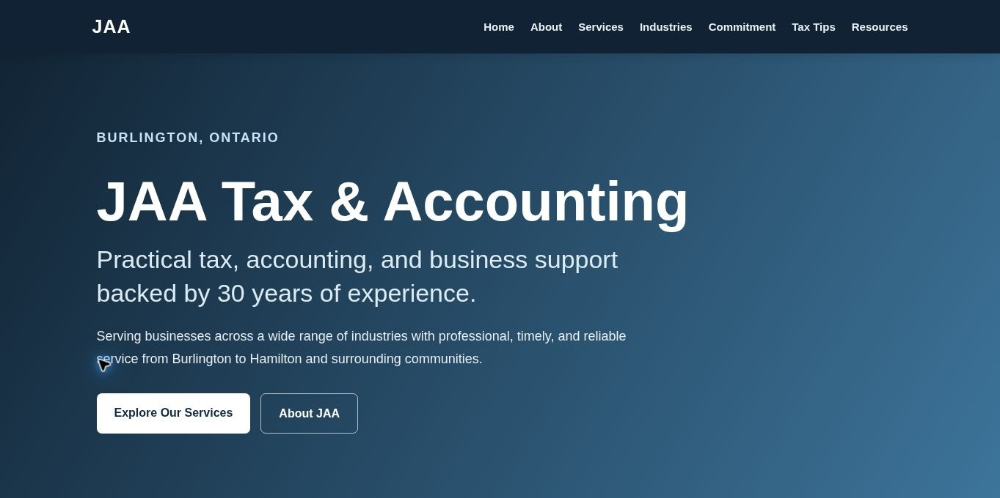

Client website · 2026
JAA Tax
& Accounting
I worked with the owner to turn the firm’s services into a client-facing website. Over two months, I implemented more than ten requested updates to service descriptions, content and links.
The owner asked me to change “Small Claim Representation” to “Small Claim Consultation.” A visitor reading the service list can now tell what kind of help the firm offers before getting in touch.
Design notes
The inquiry concept asks visitors who they’re contacting the firm for. That lets someone start with their own situation before choosing an accounting service. I’d test those labels with first-time visitors on a phone.

Try the proposed inquiry flow
JAA Tax & Accounting
What brings you here?
Interactive concept · Proposed inquiry flow